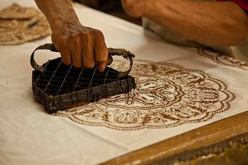
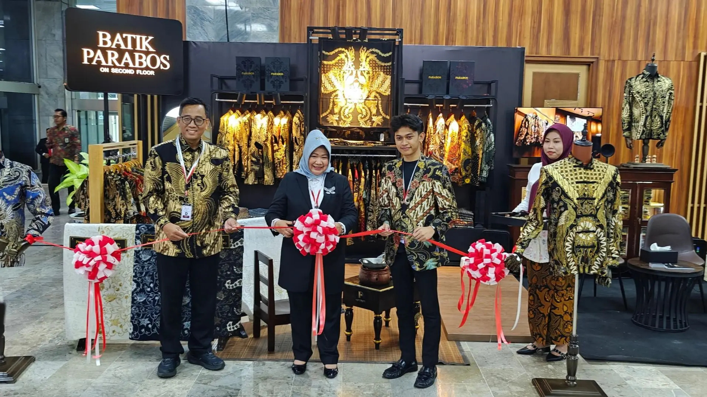
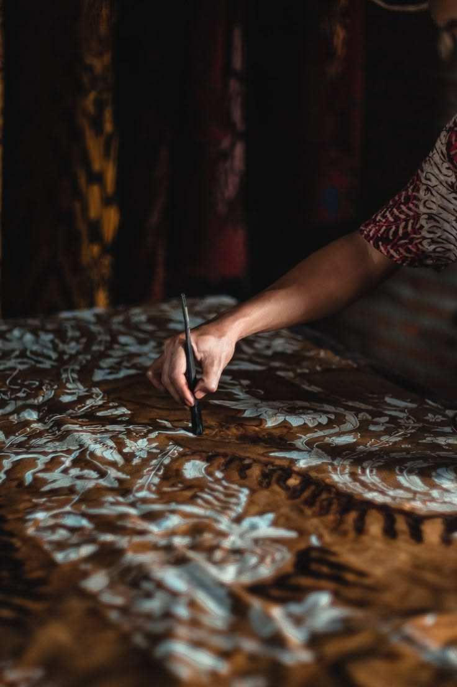
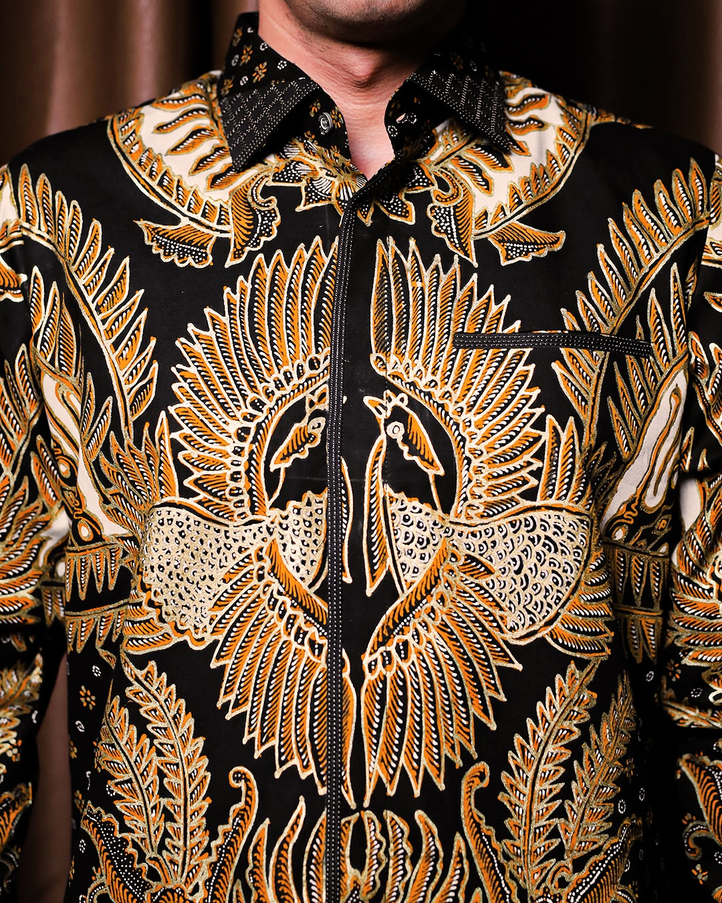

Pattern
Motifs carefully considered to balance historical reference with clean geometry.
Where enduring tradition meets contemporary expression. Discover the craft, texture, and stories behind each piece.

Batik Parabos honors the intricate relationship between time, motif, and craftsmanship. We do not merely preserve the past; we continuously interpret it for the modern silhouette.
Every piece in the collection is an exploration of texture and detail, designed to carry the weight of tradition while moving seamlessly through contemporary life.
Patience is woven into every thread.

Motifs carefully considered to balance historical reference with clean geometry.

Materials selected for their drape, feel, and structural integrity.
An obsessive focus on the invisible elements that construct true luxury.

The final articulation of the garment, ensuring longevity and grace.
Studying archival motifs and historical proportions to anchor the design narrative.
Drafting the structural foundation to marry classic batik aesthetics with modern tailoring.
The application of skill and time to realize the design in physical form.
The final touches that elevate the piece from a garment to a work of art.
Experience the collection beyond the screen. Touch the fabric, observe the details, and discover the perfect piece in person.
Make an Appointment